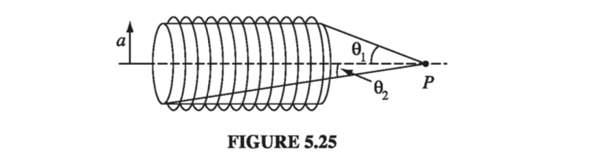

A current I flows down a wire of radius a. (a) If it is uniformly distributed over the surface, what is the surface current density K? (b) If it is distributed in such a way that the volume current density is inversely proportional to the distance from the axis, what is J(s)?
K is the current per unit width ⊥ to the direction of the flow.
K=2πaI
Suppose instead the current is distributed somehow throughout the volume of the wire such that the current density is inversely proportional to the distance from the axis. Then
j=unit area ⊥ flowcurrent=da⊥dI
We suppose that j has the form
j=sconst.=sc
I=∫jda⊥=∫0a∫02πscsdsdϕ=2πca
so
c=2πaI
and
j=2πasI
Problem 5.11
Find the magnetic field at point P on the axis of a tightly wound solenoid (helical coil) consisting of n turns per unit length wrapped around a cylindrical tube of radius a and carrying current I (Fig 5.25). Express your answer in terms of θ0 and θ2 (it's easiest that way). Consider the turns to be essentially circular and use the result of Ex 5.6. What is the field on the axis of an infinite solenoid (infinite in both directions)?

If I have n turns per unit length, then I have ndz turns along a length dz (using the natural cylindrical coordinates of the problem). The total current of the resulting loop is Indz. From Ex 5.6, we know the magnetic field due to a circular loop is
Find the magnetic vector potential of a finite segment of straight wire carrying a current I. [Put the wire on the z axis, from z1 to z2, and use Eq. 5.66.] Check that your answer is consistent with Eq. 5.37.
We will get our vector potential using Eq 5.66, as suggested
To get the magnetic field, we need to take the curl of A. We can easily tell from the symmetry of the problem that the field will be "circumferential" (in the ϕ^ direction):
or, in terms of the angles made between r and the axis of the wire,
sinθ1=z12+s2z1 and sinθ2=z22+s2z2
B=4πsμ0I(sinθ2−sinθ1)ϕ^
which is just what we got back in Eq. 5.37.
Problem 5.26
(a) By whatever means you can think of (short of looking it up), find the vector potential a distance s from an infinite straight wire carrying a current I. Check that ∇⋅A=0 and ∇×A=B. (b) Find the magnetic potential inside the wire, if it has radius R and the current is uniformly distributed.
(a)
As we said, because the current distribution is infinite, we cannot use Eq. 5.65 to get A. So let's use some symmetry. A must be parallel (or antiparallel) to I, and is a function of only s (the distance from the wire). In cylindrical coordinates, then, A=A(s)z^. We already calculated the magnetic field of an infinite straight wire via Biot-Savart:
B=2πsμ0Iϕ^
We can work backwards to get A from B in this case.
B=∇×A=−∂s∂Aϕ^=2πsμ0Iϕ^
Therefore
∂s∂A=−2πsμ0I→A(r)=−2πμ0Iln(s/a)z^
There is an arbitrary constant a here which doesn't actually affect our gauge at all:
Here, again, b is arbitrary, except that A must be continuous at R (we know that A is continuous!)
−2πμ0Iln(R/a)=−4πR2μ0I(R2−b2)
which means that we have to pick a and b such that
2ln(R/b)=1−(b/R)2
One such combination of a and b is a=b=R. Then
A={−4πR2μ0I(s2−R2)z^−2πμ0Iln(s/R)z^ for s≤R for s≥R
Problem 5.37
(a) A phonograph record of radius R, carrying a uniform surface charge sigma is rotating at constant angular velocity ω. Find its magnetic dipole moment. (b) Find the magnetic dipole moment of the spinning spherical shell in Example 5.11. Show that for points r>R the potential is that of a perfect dipole.
(a)
We get the monopole moment by integrating over the disk of the record. For a ring at radius r, m=Iπr2. In this case,
I→σvdr=σωrdr
so
m=∫0Rπr2σωrdr=πσωR4/4
(b)
To get the magnetic dipole moment of our sphere, we need to integrate over the surface of the sphere:
The total charge on the shaded ring is dq=σ(2πRsinθ)Rdθ. The time to make one revolution is dt=2πω, so the current in the ring is
I=dtdq=σωR2sinθdθ
The area of the ring is π(Rsinθ)2, so the magnetic moment of the ring is
dm=(σωR2sinθdθ)πR2sin2θ
and the total dipole moment is
m=σωπR4∫0πsin3θdθ=(4/3)σωπR4
and we know that m points in the z^ direction (right-hand-rule), so
m=34πσωR4z^
The dipole term in the multipole expansion for A is therefore
This is actually the exact vector potential we calculated (Eq. 5.69); evidently a spinning sphere produces a perfect dipole field, with no higher multipole contributions.